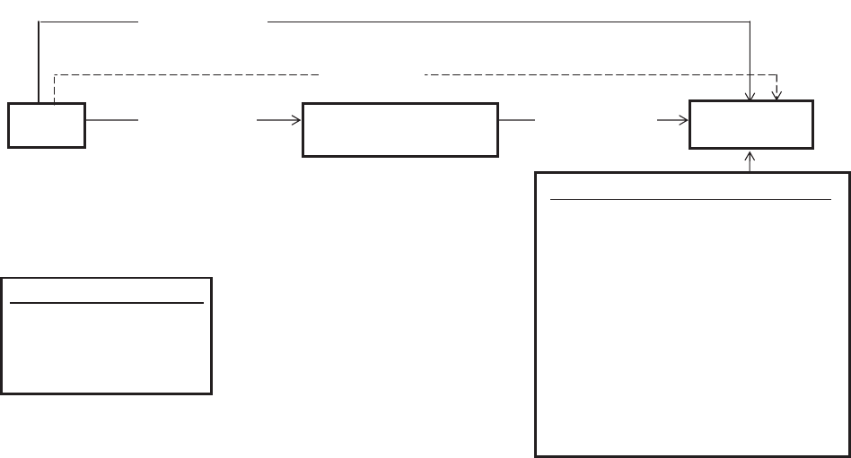
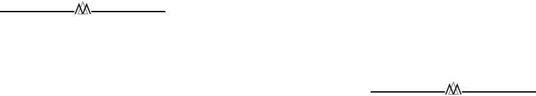

WALKING THE TIGHTROPE: AN ASSESSMENT OF THE
RELATIONSHIP BETWEEN HIGH-PERFORMANCE WORK
SYSTEMS AND ORGANIZATIONAL AMBIDEXTERITY
PANKAJ C. PATEL
Ball State University
JAKE G. MESSERSMITH
University of Nebraska–Kearney
DAVID P. LEPAK
Rutgers University
This study explores central questions related to the connections between a firm’s
human resources (HR) system and its ability to exhibit “organizational ambidexterity.”
We build from existing work on the behavioral view of ambidexterity to assess the
extent to which the utilization of certain HR practices may be linked to a context
marked by discipline, stretch, trust, and support. We further argue that these disparate
practices may be combined into a single high-performance work system (HPWS),
which allows the firm to achieve both the alignment and the adaptability necessary to
produce ambidexterity. Thus, we examine HPWS as a systematic tool for enhancing
organizational ambidexterity. We explore this link using data from 215 high-tech small
to medium-sized enterprises (SMEs) and find that HPWS utilization is positively
related to a measure of organizational ambidexterity. In turn, ambidexterity mediates
the relationship between HPWS utilization and firm growth.
This article explores the relationship between a
firm’s human resource management system and “or-
ganizational ambidexterity.” Organizational ambi-
dexterity (OA) refers to the ability of an organiza-
tion to efficiently take advantage of existing market
opportunities while creating and innovating to
meet the challenges of future markets (Andriopou-
los & Lewis, 2009; Benner & Tushman, 2003; Dun-
can, 1976; Gibson & Birkinshaw, 2004; Tushman &
O’Reilly, 1996). OA serves as a parallel to individ-
ual ambidexterity, which refers to an individual’s
ability to use either his/her left or right hand with
equal dexterity (Lubatkin, Simsek, Ling, & Veiga,
2006). Similarly, OA focuses on the ability of the
organization to both efficiently exploit its existing
competencies (via “exploitation”) and foster the
innovativeness (via “exploration”) to bring forth
the products and services that will enhance future
firm competitiveness (Abernathy, 1978; Brown &
Eisenhardt, 1998; Hayes & Abernathy, 1980;
Levinthal & March, 1993). Further, these capabili-
ties of exploitation and exploration are often
thought to compete against one another as scarce
resources are divided to meet the demands of both
(Abernathy, 1978; March, 1991). In other words, a
focus on efficiency may be antithetical to the flex-
ibility necessary to create innovations within a firm
(Abernathy, 1978).
Despite the inherent contradictions in organiza-
tional structures and systems that lead to either
efficiency or innovation, organizational scholars
have called for the necessity of cultivating both
competencies within a firm (e.g., Bierly &
Chakrabarti, 1996; Gibson & Birkinshaw, 2004; He
& Wong, 2004; Katila & Ahuja, 2002; Lubatkin et al.,
2006; Tushman & O’Reilly, 1996). Researchers have
suggested that firms may achieve both exploration
and exploitation through structural methods of dif-
ferentiation within themselves (Duncan, 1976;
March, 1991). This structural view of ambidexterity
is a work flow model that encourages both explo-
ration and exploitation by building separate organ-
izational units tasked with the dissimilar goals as-
sociated with these activities, or by creating
temporal separation in the sequencing of organiza-
tional activities (Duncan, 1976; Lavie, Stettner, &
All authors contributed equally. Please address all cor-
respondence to Jake G. Messersmith.
1420
Academy of Management Journal
2013, Vol. 56, No. 5, 1420–1442.
http://dx.doi.org/10.5465/amj.2011.0255
Copyright of the Academy of Management, all rights reserved. Contents may not be copied, emailed, posted to a listserv, or otherwise transmitted without the copyright holder’s express
written permission. Users may print, download, or email articles for individual use only.
Tushman, 2010; Romanelli & Tushman, 1994;
Tushman & Anderson, 1986).
Although the achievement of structural forms of
OA is often a viable model for larger firms, it is a
resource-consuming strategy requiring duplicate or-
ganizational functions and is thus not an option for
all firms (Duncan, 1976; Lubatkin et al., 2006;
March, 1991; Raisch, Birkinshaw, Probst, & Tush-
man, 2009). Rather, constraints often require em-
ployees in small to medium-sized enterprises
(SMEs) to focus their energies on both exploration
and exploitation activities concurrently (Lubatkin
et al., 2006). SMEs are more likely to pursue ambi-
dexterity by creating a behavioral context that re-
quires the integration of different activities at lower
organizational levels (Andriopoulos & Lewis, 2009;
Gibson & Birkinshaw, 2004; Mom, van den Bosch,
& Volberda, 2009).
Gibson and Birkinshaw suggested that organiza-
tional performance can be enhanced by developing
“a carefully selected set of systems and processes
that collectively define a context that allows the
meta-capabilities of alignment and adaptability to
simultaneously flourish, and thereby sustain busi-
ness unit performance” (2004: 210). These authors
further identified stretch, discipline, support, and
trust as elements of an organizational system that
are necessary for producing a more behavioral
model of ambidexterity, which they term contex-
tual ambidexterity. However, beyond work on
these general characteristics, little empirical work
has been done to identify organizational systems
that facilitate the behavioral or “harmonic” view of
ambidexterity (Lavie et al., 2010; Simsek, 2009;
Simsek, Heavey, Veiga, & Souter, 2009).
This study attempts to address this gap by build-
ing on existing work on the behavioral view to
examine the extent to which one such system—the
human resource management system—may serve
as an antecedent that enables firms to develop a
context for ambidexterity. More specifically, our
aim is to assess the extent to which high-perfor-
mance work systems (HPWS) may assist firms in
developing a behavioral context that promotes am-
bidexterity in their workforces. In line with Gibson
and Birkinshaw (2004), such systems are likely to
emphasize alignment and adaptability via separate
HR practices that work in concert to establish a con-
text of “stretch,” “discipline,” “support,” and “trust,”
which are noted to be necessary elements of an am-
bidextrous organization (Ghosal & Bartlett, 1994).
HPWS AND ORGANIZATIONAL
AMBIDEXTERITY
Although the concept of an HPWS has not been
consistently and precisely defined in the literature,
it has generally been utilized to describe a system
of horizontally and vertically aligned employment
practices designed to affect both the ability and the
motivation of employees (Huselid, 1995; Takeuchi,
Chen, & Lepak, 2009; Takeuchi, Lepak, Wang, &
Takeuchi, 2007). These employment models have
an overarching goal of attracting, retaining, and
motivating human resources toward the comple-
tion of organizational goals by creating a fit be-
tween the knowledge, skills, and abilities of a per-
son and the tasks, duties, and responsibilities
required by a job. The literature in this area has
consistently argued that the practices themselves
do not produce competitive advantage; rather, per-
formance gains arise from the human resources that
are developed by an HPWS system (Appelbaum,
Bailey, Berg, & Kallerberg, 2000; Huselid, 1995;
Wright, Dunford, & Snell, 2001; Wright, McMahan,
& McWilliams, 1994). By the same logic, behavioral
ambidexterity is not likely to arise from a set of
practices, but rather out of a firm’s unique human
resource base (Barney, 1991). More specifically, it
is realized through the flexibility of allocating the
time and attention of human resources toward ex-
ploration and exploitation (Gibson & Birkinshaw,
2004; Lepak, Takeuchi, & Snell, 2003).
As Kang and Snell stated, “contextual ambidex-
terity assumes that the ambidexterity of an organi-
zation as a whole derives from specific actions of
individuals so that it is inextricably tied to a firm’s
efforts to manage human resources” (2009: 66).
Similarly, Gibson and Birkinshaw stated that am-
bidexterity is developed by “building a business-
unit context that encourages individuals to make
their own judgments as to how best divide their
time between the conflicting demands for align-
ment and adaptability” (2004: 211). In other words,
organizations pursuing behavioral forms of ambi-
dexterity must put in place practices that work to
develop resource flexibility in their employee base,
so that human resources have the discretion and
motivation to devote their efforts to activities asso-
ciated with both exploitation and exploration
(Cordery, Sevastos, Mueller, & Parker, 1993; Lepak
et al., 2003).
This is an important distinction, as the flexibility
does not lie with the system, but rather with the
behavioral choices of the human resources asked to
2013 1421Patel, Messersmith, and Lepak
meet the disparate goals of their organization
(Wright & Snell, 1998). For instance, Toyota’s dem-
onstrated ability to both explore and exploit con-
currently has been attributed to the problem-solv-
ing ability of its employees at all levels of the
organization (Lavie et al., 2010; Takeuchi, Osono, &
Shimizu, 2008). Further referencing Toyota as an
exemplar, Macduffie noted that much of the firm’s
success can be attributed to its ability to develop
dynamic capabilities, which result from invest-
ments “in the human resource practices that boost
employee motivation, skill, and adaptability”
(Adler et al., 2009: 109).
Although the ability to achieve ambidexterity
arises out of a human resource base itself, it is
likely to be supported by the system of HR practices
employed by an organization. More specifically,
the literature emphasizing behavioral models of
ambidexterity has stressed the need to build an
organizational context that allows a firm to be prop-
erly aligned with an existing market but also adapt-
able to changing market realities (Gibson & Birkin-
shaw, 2004). Such a context is thought to promote
both alignment and adaptability (Ghosal & Bartlett,
1994; Gibson & Birkinshaw, 2004).
Alignment: Achieving Stretch and Discipline via
an HR System
Alignment is the capability to develop “a clear
sense of how value is being created in the short
term and how activities should be coordinated and
streamlined to deliver value” (Birkinshaw & Gib-
son, 2004: 47). Gibson and Birkinshaw (2004) in-
voked Ghosal and Bartlett’s (1994) work to demon-
strate that alignment is produced through an
organizational context that combines discipline
and stretch. Discipline is thought to be a function of
having clear performance standards and expecta-
tions, swift and open feedback systems, and con-
sistency in how employees are managed (Ghosal &
Bartlett, 1994). Stretch, on the other hand, refers to
an organizational context in which members vol-
untarily and actively push their own standards and
expectations to higher levels (Ghosal & Bartlett,
1994). An organization’s HR system is likely to play
an important role in producing these contextual
elements.
Many of the traditional elements of an HR system
are designed to match employees closely to the
demands of specific jobs. Hayton suggested that
traditional HR practices focus upon “clearly defin-
ing jobs in terms of their tasks, duties, and respon-
sibilities; carefully structuring equitable rewards
for those jobs; and monitoring individual perfor-
mance” (2003: 386). Such practices are generally
derived from a formal job analysis program, in
which job descriptions and job specifications are
developed to ensure fit between a person and the
job he or she is asked to perform. This job analysis
information is then used to create valid selection
instruments that identify people with the proper
skill profile for a given job, to create training pro-
grams to transfer the correct pieces of knowledge
necessary to do the job, to form performance ap-
praisal mechanisms, and to fairly compensate indi-
viduals on the basis of identified compensable fac-
tors. These practices are likely to assist in
producing a context that supports alignment with
existing opportunities. The theoretical link be-
tween such HR practices and an alignment-based
context of discipline and stretch is straightforward.
Discipline exists within an organizational system
when employees understand what is expected of
them, are provided with the proper skills to meet
those expectations, and are held accountable for
their actions.
The second important element in achieving the
alignment discussed by Gibson and Birkinshaw
(2004) is stretch. Stretch occurs when employees
are given goals that “raise the bar” regarding previ-
ous performance targets. An HR system can be use-
ful in building such a context by helping to form a
context encouraging the attainment of more and
more ambitious goals (Gibson & Birkinshaw, 2004).
Such goals may be particularly powerful motiva-
tors when aligned with a proper set of incentives.
When employees are offered financial benefits for
exceeding goals and targets, they are more likely to
feel the positive sense of stretch that is necessary to
build an ambidextrous organization. While the re-
search literature on the link between incentives
and performance shows mixed outcomes, the meta-
analytic results suggest that, when properly aligned
with other organizational practices, incentive pay
works to motivate employees to reach defined ob-
jectives (Jenkins, Mitra, Gupta, & Shaw, 1998).
Therefore, when utilized properly, incentives may
play a pivotal role in creating a context of stretch in
an organization.
Adaptation: Achieving Support and Trust via an
HR System
Adaptation refers to a firm’s “ability to move
quickly toward new opportunities, to adjust to vol-
1422 OctoberAcademy of Management Journal
atile markets and to avoid complacency” (Birkin-
shaw & Gibson, 2004: 1). Adaptability is likely to
result from practices that enhance support and
trust within the organization (Gibson & Birkin-
shaw, 2004). Support refers to the resources, care,
and autonomy provided to employees (Ghosal &
Bartlett, 1994). Meanwhile, trust is thought to be
influenced by perceptions of equity within the or-
ganization, the competence of organizational lead-
ers, and the level of involvement offered to employ-
ees (Ghosal & Bartlett, 1994). Elements of the firm’s
HR system are likely to be useful in building a
context characterized by trust and support.
For instance, trust can be enhanced through prac-
tices associated with internal advancement oppor-
tunities and job security. Firms that offer these
practices are likely to be deemed more trustworthy
by employees who sense that they are valued mem-
bers of their organizations. As such, the human
resource base may be more prone to engaging in
discretionary efforts beyond those set forward in
their job description. Further, firms that provide
employees with greater career mobility and promo-
tion potential are likely to have a more adaptable
workforce because of higher levels of perceived
trust. Employees who see that multiple advance-
ment opportunities are available to those who suc-
ceed may be more likely to take calculated risks.
Such employees may feel empowered by the organ-
izational system and will be more motivated to try
new approaches. For instance, Ramirez (2007) ar-
gued that strong internal labor markets that focus
on development and advancement help to establish
stronger firm-level competencies. Greater advance-
ment opportunities provide signals to employees
that they are empowered to make critical decisions
and are likely to be rewarded with promotions if
they demonstrate a propensity for risk taking.
Further, through measures to ensure a degree of
job security, organizations are more likely to pro-
mote risk taking, which may lead to more innova-
tive outcomes for the firms. For instance, in a re-
search-based text on corporate entrepreneurship,
Morris, Kuratko, and Covin state: “Moreover given
that risk implies failure, appraisal and reward sys-
tems should reflect a tolerance of failure and offer
some employment security” (2008: 172).
Similarly, support can be enhanced via a firm’s
HR system through information sharing and partic-
ipation programs. Such programs allow employees
to work with each other to develop solutions that
may not be readily created by single employees.
Providing avenues for employees to engage in in-
formation exchange and mutual problem solving
builds a context of support in which employees see
themselves as part of a larger group seeking broader
goals and outcomes. Firms that utilize decentral-
ized and team-based decision making have been
noted to create more technological innovations
(Perdomo-Ortiz, Gonzáles-Benito, & Galende,
2009). Similarly, Beugelsdijk (2008) studied the ef-
fect of various HR practices on firm-level innova-
tion and found that firms with decentralized organ-
izational structures, which provide task autonomy
and flexible work, generate more product innova-
tions. By delegating authority to lower levels and
empowering employees to make important deci-
sions, a firm is likely to generate more innovative
solutions than are typically enjoyed by firms with
less involvement-oriented structures (Hornsby, Ku-
ratko, & Montagno, 1999; Hornsby, Kuratko, &
Zahra, 2002).
The System Effect: HPWS and Organizational
Ambidexterity
Conceptually, while individual HR practices
may be geared toward building discipline, stretch,
trust, or support, respectively, it is likely that com-
bining these different sets of practices into an
HPWS will promote a context that helps to create
an ambidextrous workforce. Conceptually, this im-
plies that one set of HR activities helps to build a
resource base capable of exploiting existing market
realities, while another set of activities works to
simultaneously build the resource adaptability nec-
essary to explore new opportunities. In other
words, discipline and stretch are created by more
alignment-oriented HR activities, while support
and trust are created by more adaptation-oriented
HR activities.
This is not to say that there will not be crossover
effects for individual practices. For instance, prop-
erly designed incentive programs may enhance
both efficiency and innovation simultaneously.
Similarly, selective staffing along certain dimen-
sions can enhance both alignment and flexibility.
However, the greater point is that when an HPWS is
utilized that combines practices aimed at each of
the contextual elements into a single system, an
organization is more likely to overcome the inher-
ent tensions between exploration and exploitation
via the ambidextrous capabilities of its workforce.
In other words, such a system works to create a
human capital pool that can achieve both fit and
resource flexibility (Lepak et al., 2003; Wright &
2013 1423Patel, Messersmith, and Lepak
Snell, 1998). Alignment-based practices such as job
analysis, job-based staffing, performance appraisal,
incentive-based compensation, and training pro-
grams help an organization ensure that individuals
have the knowledge, skill, and ability to effectively
perform their current job demands in a productive
manner. These practices create a clear sense of
stretch and discipline (Ghosal & Bartlett, 1994) in
the organizational system by clearly defining per-
formance, selecting individuals best suited to meet
those standards, assessing performance relative to
the goals set by the organization, and stretching
individuals to exceed expectations via incentives.
Further, by carefully matching individuals to
jobs and training employees to perform their tasks
efficiently, an organization can help to free up more
time for exploratory activities. In addition to added
time resources, the promotion of advancement op-
portunities, job security provisions, participation,
and information sharing elements of an HPWS al-
lows for a greater sense of trust and support (Ghosal
& Bartlett, 1994) within the organization. Wright
and Snell (1998) referred to these components as
the “participative infrastructure” of an organiza-
tion. Such a context helps to develop flexibility
within the resource base and allows for the creation
of more innovative solutions. In other words, a
well-crafted system of HR practices is likely to pro-
duce a workforce capable of adapting to the chang-
ing needs of the market (Wei & Lau, 2010).
It is important to note that the logic of combining
one set of practices that produces alignment with
another set that produces adaptability is dependent
upon the complementarities between these dispa-
rate practices. These practices are not inherently
orthogonal to one another, but rather serve different
purposes in eliciting and motivating desired behav-
iors from human resources. For instance, when a
firm chooses to utilize selective staffing practices
that closely match individual skill sets to job re-
quirements, this choice does not preclude the or-
ganization from also utilizing participation pro-
grams and information sharing practices. Rather,
utilizing such practices in concert helps to ensure
that talented human resources interact and share
their specific knowledge with one another in the
pursuit of goals and objectives that require multiple
skill sets.
Similarly, firms that implement incentive-based
compensation programs along with relative job se-
curity provisions are not creating competing prac-
tices but complementary practices. Individuals
who are provided with incentives to meet challeng-
ing goals (stretch) but who are given some assur-
ance that risk taking will not result in the loss of
employment (trust) are more likely to proactively
seek new opportunities without fear of being dis-
missed if the risk fails to bear fruit. In such cases,
the employee is stretched to meet performance
standards, while maintaining trust that the organi-
zation remains committed to his or her future with
the firm.
Gibson and Birkinshaw (2004) suggested that
firms achieve ambidexterity when they are able to
demonstrate alignment with existing opportunities
while simultaneously demonstrating the ability to
adapt to changing markets. Further, the authors
argued that alignment results from an organization-
al context that exhibits discipline and stretch,
while adaptation arises out of a context of support
and trust. We have built on these arguments by
suggesting that such a context can be established
via an HPWS. Such systems are useful at helping a
firm to balance exploration and exploitation by cre-
ating resource flexibility within its workforce.
Therefore, we test the following:
Hypothesis 1. HPWS utilization is positively
related to organizational ambidexterity.
The strategic HR literature has consistently
found positive results between the adoption of
HPWS and a host of performance metrics, includ-
ing financial performance and sales growth, among
others (Batt, 2002; Guthrie, 2001; Huselid, 1995;
Messersmith & Guthrie, 2010; Takeuchi et al.,
2007). In noting that the system itself does not
produce a sustainable competitive advantage, this
literature base has also long recognized the need to
identify the mediating components that help to link
HPWS utilization to firm performance (Batt, 2002;
Becker & Huselid, 2006; Takeuchi et al., 2007).
Recent studies have begun to address this issue
(i.e., Jiang, Lepak, Hu, & Baer, 2012; Sun, Aryee, &
Law, 2007; Takeuchi et al., 2007); however, much
remains unknown regarding the myriad of mecha-
nisms through which performance is altered or af-
fected by a firm’s HR system.
Organizational ambidexterity may be one such
component through which HPWS has an influence
on performance outcomes. In fact, ambidexterity
has been linked to performance in a host of organ-
izational studies. For instance, Gibson and Birkin-
shaw (2004) reported an association between ambi-
dexterity and perceived performance in a sample of
41 business units. Lubatkin et al. (2006) found a
positive association between ambidexterity and rel-
1424 OctoberAcademy of Management Journal

ative firm performance in a sample of 139 New
England–based SMEs. Similarly, Cao, Gedajlovic,
and Zhang (2009) reported a positive relationship
between forms of OA and subjective relative per-
formance in a sample of China-based firms. Also,
He and Wong (2004) find support for an interaction
effect between exploitation and exploration activi-
ties on sales growth.
These results suggest that if firms are able to
build effective HR systems that help to produce a
more adaptable workforce, then this in turn may
help to produce greater levels of innovation and
improved performance. In particular, SMEs that are
able to develop this competency for ambidexterity
are likely to experience greater growth rates, an
objective that is frequently high on the list of pri-
orities for smaller firms (Messersmith & Guthrie,
2010). In a sample of technology-based SMEs, we
expect firms that are able to leverage a flexible
resource base to achieve greater growth rates than
those lacking this competency.
Firms that are able to combine a set of comple-
mentary HR practices into an HPWS are likely to
see performance improvements through the medi-
ating influence of organizational ambidexterity.
Firms building the proper context for ambidexter-
ity via an HPWS will likely see the fruits of this
competency: a committed and flexible workforce
that helps to drive the performance and growth of the
organization. Therefore, we propose that HPWSs are
able to affect SME performance and, more specifi-
cally, growth through the ability of such systems to
produce an ambidextrous workforce. In turn, an
ambidextrous workforce enables an organization to
better take advantage of market opportunities while
maintaining focus on exploiting existing markets.
The net result is an organization with greater
growth potential, because it is able to remain
aligned with existing opportunities but adaptable
to changing conditions. Thus, we test the following
hypothesis:
Hypotheses 2. Organizational ambidexterity
partially mediates the relationship between
HPWS utilization and firm growth.
METHODS
To test our hypotheses, we focused on high-tech-
nology manufacturing ventures of 10–250 employ-
ees in the midwestern US that were ten years old or
younger. We used the Corptech directory as our
sampling frame. The directory provides a compre-
hensive list of technology firms ranging from pub-
lic to private firms and from domestic to foreign-
owned firms. Each directory listing provides
information on firm name, location, product codes,
SIC codes, top management team, and sales and
employee information. A firm is initially identified
through different sources such as technology news-
letters, trade associations, press-clipping services,
economic development agencies, and manufactur-
ing/services directories. After a firm is initially
identified, an interviewer from Corptech conducts
a 15–20 minute interview with a senior executive.
This interview is the basis for coding of the firm’s
products and services, after which Corptech con-
tacts it to read its profile and correct errors. The
directory is updated yearly through the compila-
tion of information from archival sources and tele-
phone interviews. Information on a firm’s top man-
agement team, sales, and employees is obtained
through telephone interviews, whereas information
on product classes, industry membership, and firm
location is drawn from archival sources. Compila-
tion of firm information by Corptech and confirma-
tion of the compiled details by a company execu-
tive provide additional corroboration through
triangulation. The Corptech directory has been
used in several studies (e.g., Lu & Beamish, 2001;
Romanelli & Tushman, 1994). The data have been
specifically used to assess innovation efforts in
technology industries (Lee & Paruchuri, 2008; Pura-
nam, Singh, & Zollo, 2003, 2006; Sine, Mitsuhashi,
& Kirsch, 2006).
To balance survey cost and scope, we focused on
firms in the states of Illinois, Indiana, Kentucky,
Missouri, and Ohio. We were able to identify 1,526
ventures listed in the 2009 Corptech directory in
these states. The high-tech manufacturing ventures
represented in the 1,526 ventures were from 30
NAICS codes.
1
Respondents were provided a tem-
1
Electronic computers (334111); computer storage de
-
vices (334112); computer terminals (334113); other com-
puter peripheral equipment (334119); telephone appara-
tus (334210); radio & TV broadcasting and wireless
communications equipment (334220); other communica-
tions equipment (334290); fiber optic cables (335921);
audio and video equipment (334310); electron tubes
(334411); bare printed circuit boards (334412); electronic
capacitors (334414); electronic resistors (334415); elec-
tronic coils, transformers, and other inductors (334416);
electronic connectors (334417); printed circuit assembly
(334418); other electronic components (334419); semi-
conductor and related devices (334413); semiconductor
2013 1425Patel, Messersmith, and Lepak
poral reference point, as they were asked to re-
spond to items assessing all firm-level variables
from the previous two years (2007 and 2008) and
the current year (2009). Given their youth and the
dynamic environment, these SMEs operate from a
broader three-year reference point that includes the
current year and that helps measure more general-
ized trends while ensuring that industry cycles are
considered in establishing such generalizations.
Prior to sending the survey, we conducted a pilot
survey with two distinct groups: (a) six active re-
searchers in the field of management and (b) eight
CEOs of high-technology manufacturing companies
in a large midwestern city. We first sought infor-
mation from academic researchers to assess the face
and content validity of the scales in the context of
new ventures. Using feedback from the researchers,
we made changes in the order and wording of sur-
vey items. In the next stage, we conducted personal
interviews with eight CEOs using the updated
scales. We used their feedback to change the word-
ing of items that were deemed difficult to interpret,
and we developed a glossary of terms that would
help respondents in the final survey to provide
more effective and valid responses. An additional
pilot test of HR practices in ventures was also con-
ducted (which we discuss later).
The survey data were collected from CEOs. In the
context of SMEs, CEOs are a relevant respondent
group, especially in young ventures. Young and
small ventures tend to have fewer hierarchical
levels, which generally means that CEOs play a
central role in the day-to-day management of ven-
tures (e.g., Sharfman, 1998; Sine et al., 2006).
A packet containing our survey, along with a
cover letter and prepaid business reply envelope,
was sent to the CEO of each firm. To enhance
response rates, which are typically low for CEOs,
we informed potential respondents that we would
donate US$20 for every completed survey to a char-
ity of their choice. After the first mailed survey and
three follow-up reminder e-mails sent between Oc-
tober 2009 and January 2010, we received re-
sponses from 219 CEOs (14.35% response rate).
Low response rates (10 –15%) are typical for mailed
surveys to top executives (e.g., Bartholomew &
Smith, 2006; Baruch & Holtom, 2008), particularly
in privately held SMEs (Messersmith & Guthrie,
2010). In the final data set, we excluded four firms
with incomplete data. This yielded a final sample
of 215 firms.
We tested for nonresponse bias by comparing
early and late respondents and responding and
nonresponding firms. We compared these groups
with respect to firm age (early vs. late: F ϭ 0.83,
n.s.; respondents vs. nonrespondents: F ϭ 1.04,
n.s.), previous year sales revenue (early vs. late: F ϭ
0.32, n.s.; respondents vs. nonrespondents: F ϭ
0.80, n.s.), number of employees (early versus late:
F ϭ 0.62, n.s.; respondents vs. nonrespondents: F ϭ
0.72, n.s.), across the 18 SIC codes (early versus
late: F ϭ 1.02, n.s.; respondents vs. nonrespon-
dents: F ϭ 1.14, n.s.), and respondent industry
work experience (early versus late: F ϭ 0.32, n.s.).
Each of these comparisons produced nonsignifi-
cant results. Using the above attributes for assess-
ing late and early respondent bias and respondent
and nonrespondent bias, we assess the joint effects
of the above factors using Heckman’s (1979) two-
step residual estimation (
ϭ 0.02, p ϭ .86; inverse
Mill’s ratio, 0.05, p ϭ .67;
ϭ 0.04, p ϭ .59). These
tests revealed no bias for early and late responders
(
ϭ 0.03, p ϭ .62; inverse Mill’s ratio: 0.04, p ϭ .71;
ϭ 0.04, p ϭ .53). In addition, we calculated sam-
pling error by using the population of ventures
in the high-tech manufacturing sector during 2009
in the US. Our sampling error (6.28%) was within
the acceptable range (Särndal, Swensson, & Wret-
man, 1992).
2
To further assess whether the sample
represents the underlying population, we con-
ducted Welch’s t-test, which assumes different
sample sizes and unequal variances (firm age:
t ϭ 1.47, p ϭ .14, firm size: t ϭ 1.04, p ϭ .30,
number of employees: t ϭ 1.40, p ϭ .16, firm sales:
t ϭ 1.37, p ϭ .17, number of new products intro-
duced in the last three years [2008–10: t ϭ 1.48, p
ϭ .14], and number of new products introduced in
that period that were not in product classes during
machinery (333295); search, detection, navigation, guid-
ance, aeronautical, and nautical systems and instruments
(334511); automatic environmental controls (334512); in-
dustrial process control instruments (334513); totalizing
fluid meter and counting devices (334514); electricity
measuring and testing equipment (334515); analytical
laboratory instruments (334516); other measuring and
controlling instruments (334519); electromedical and
electrotherapeutic apparatus (334510); irradiation appa-
ratus (334517); optical instrument and lens (333314); and
photographic and photocopying equipment (333315).
2
Based on the population of all firms listed in the
high-tech SIC codes and located in the geographical re-
gion, assuming a 10 percent response rate and a 99%
confidence interval.
1426 OctoberAcademy of Management Journal
the previous three years [2006–08] t ϭ 1.30, p
ϭ .19).
Measures
Dependent variable: Firm growth. We use the
average of sales and employee growth for the years
2008, 2009, and 2010. To achieve triangulation, we
used multisource sales and employee data, from
Corptech, Dun and Bradstreet Million Dollar Direc-
tory, and the Ward’s Directory. We were able to
match all 215 ventures from at least two sources.
Information on 32 ventures was available in all
three directories. We take the mean of reported
sales and employees during 2008–10, for which
sales growth is measured as the compounded an-
nual growth rate (CAGR):
Sales
CAGR
ϭ
ͩ
sales
2010
sales
2008
ͪ
1⁄3
Ϫ 1.
Employee growth is also measured as a CAGR of
employees during 2008–10.
HPWS. We used a measure of HPWS derived
from Sun et al. (2007), who drew upon prior re-
search (i.e., Bae & Lawler, 2000; Bamberger & Me-
shoulam, 2000; Delery & Doty, 1996), to develop a
27-item scale (from 1, “strongly disagree,” to 5,
“strongly agree”) to measure integrated high-perfor-
mance HR practices. The index is based on eight
unique domains for HR systems. However, use of
traditional HR practices has been increasingly
questioned in the case of SMEs (Sels, De Winne,
Maes, Delmotte, Faems, & Forrier, 2006). To ensure
that the scale was relevant to respondents, we first
conducted a pilot study, followed by exploratory
factor analysis, and tested for convergent and di-
vergent validity.
As the dynamics of the human resource manage-
ment system may be quite different for SMEs be-
cause of the costs resulting from an excessive focus
on HR practices, young firms may not realize the
full benefits of HR policies due to a lack of econo-
mies of scale. Therefore, to ensure that the CEOs of
the young ventures perceived the HR scales in a
similar fashion to typical managers in larger firms
(a common data source in strategic HR research),
we conducted a pilot study of the index on 21 CEOs
of young (age Ͻ 10 years) high-technology manu-
facturing ventures in the Midwest, and also on four
researchers who were actively conducting research
on HR policies in small firms. Drawing on their
feedback, we added a glossary and further clarifi-
cations of survey objectives.
To assess validity and reliability, we started with
exploratory factor analysis using principal axis fac-
toring to uncover the underlying factor structure of
the high-performance HR practices (Table A1 of
Appendix A). In line with earlier work by Sun et al.
(2007), the rotated factor matrix produced an eight-
factor solution. Individual item loadings, reliabili-
ties, and average variance extracted (AVE) are
listed in Table A2. The alpha reliabilities for the
subscales were equal to or above the .70 criterion
(Hair, Anderson, Tatham, & Black, 1998). Follow-
ing this, we conducted a confirmatory factor anal-
ysis (CFA) to test the factor structure of the 27
high-performance work practices. This analysis
showed acceptable fit (
2
/df ϭ 1.49; CFI ϭ .94,
TLI ϭ .92, RMSEA ϭ .06, SRMR ϭ .05). As shown
in Table A2, the high-performance human resource
practices scale included eight dimensions: selec-
tive staffing, extensive training, internal mobility,
employment security, broad job design, results-ori-
ented appraisal, rewards, and participation. The
AVE values are above 0.5 and hence indicate dis-
criminant validity among the subscales.
In the context of operationalizing HPWS, Becker
and Huselid called “for a unitary index that con-
tains a set (though not always the same set) of
theoretically appropriate HRM practices derived
from prior work” (1998: 63). Based on the tradi-
tional approach for operationalizing the HPWS
measure, we used an additive index to reflect a
single comprehensive measure of a firm’s HR sys-
tem (Bae & Lawler, 2000; Batt, 2002; Guthrie, 2001;
Huselid, 1995). A high score on this measure indi-
cates a relatively intensive investment in high-per-
formance work practices.
Organizational Ambidexterity
Ambidexterity was assessed by using measures
of both exploration and exploitation. Measures of
both of these constructs are based on an established
12-item scale published by Lubatkin et al. (2006).
The six items used to measure exploration (see
Appendix A;
␣
ϭ .87) included “the venture...
bases its success on its ability to explore new tech-
nologies.” Similarly, the six items used to measure
exploitation (
␣
ϭ .86) focused on issues such as
“the venture...commitstoimprove quality and
lower cost.” The 12 items asked the CEO to assess
exploration and exploitation during the past
three years on a Likert-type scale (1, “strongly dis-
agree,” to 5, “strongly agree”). Individual item load-
ings for exploration and exploitation show ade-
2013 1427Patel, Messersmith, and Lepak
quate convergent and divergent validity (see
Table A2 in Appendix A). We measured the con-
gruence between exploration and exploitation us-
ing latent congruence modeling (LCM) to incorpo-
rate measurement error and model covariance
among individual items under exploration and ex-
ploitation (Appendix B). We refer to this outcome
variable as “ambidexterity congruence.”
Control variables. We control for a number of
theoretically relevant factors. First, since the like-
lihood of using an HPWS may increase with com-
pany size (Guthrie, 2001), we control for firm size
by including a variable measuring the mean num-
ber of employees (natural log) in an organization in
the past three years (2007–09). Firm age (number of
years since start-up) in 2009 was included as a
control to study the time available for developing
HRM practices and the possible learning curve ef-
fects on productivity (Guthrie, 2001). Information
for firm age and firm size were obtained from
Corptech and the Dun and Bradstreet Million Dol-
lar Directory. In case of discrepancies, we use the
average of reported information from the two data
sources. At the firm level, we add self-reported
R&D intensity to control for the extent to which
firms invest in innovation.
As the level of stability in a firm’s industry is
likely to affect its performance characteristics, we
also control for environmental dynamism. We sum
the net sales for all firms in the Corptech database
at the six-digit NAICS code level between 2005 and
2009. Then, we regress the five previous years’
industry sales against year, using the equation y
t
ϭ
b
0
ϩ b
1
ϫ t ϩ e
t
, where y
t
is industry sales, t is year,
and e is the residual. Environmental dynamism is
measured as the standard deviation of the regres-
sion coefficient (b
1
) (Keats & Hitt, 1988). Environ
-
mental munificence is the regression coefficient
(b
1
) from the regression for environmental dyna
-
mism, for which a higher beta indicates higher
sales growth and therefore greater munificence
(Dess & Beard, 1984; Keats & Hitt, 1988). Environ-
mental complexity is the regression of market
shares of all firms in the industry in year 2009 on
market shares in year 2005. As higher beta indi-
cates increasing market shares and decreasing frag-
mentation, we multiply the beta by Ϫ1 so that
higher values indicate greater complexity (Heeley,
King, & Covin, 2006).
Finally, it is likely that social desirability could
lead to biased responses on innovation and HR-
related practices. To partially control for such ef-
fects, we use a ten-item social desirability scale (
␣
ϭ .78) from Strahan and Gerbasi (1972) that has
been extensively validated as a short-form social
desirability scale (e.g., Reynolds, 1982; Thompson
& Phua, 2005). In addition to the direct effects of
social desirability, we use additional interactions
(social desirability ϫ HPWS and social desirability
ϫ organizational ambidexterity congruence). Intro-
ducing additional interactions helps to explain
unique social desirability related to HR practices
and ambidexterity, respectively.
RESULTS
Prior to testing the hypothesized relationships,
we evaluated the robustness of the model. First, to
remove some of the effects of multicollinearity, the
measures were mean-centered. To assess whether
multicollinearity was a significant problem at the
firm level, we calculated the variance inflation fac-
tors (VIF) and condition index. Multicollinearity
was not a significant issue in this study, because all
VIF values were below 10 (highest VIF ϭ 4.56), and
the condition index was below 30 (condition index
ϭ 19.62) (Hair et al., 1998).
Although our outcome measures are derived
from archival sources, the measures of HR practices
and ambidexterity could share common method
variance. Drawing on survey design guidelines pro-
posed by Podsakoff, MacKenzie, Lee, and Podsa-
koff (2003), we changed the order of scale items,
provided a glossary of terms, guaranteed confiden-
tiality, and used clear response guidelines. Next,
we used Harman’s one-factor test, which resulted
in five factors accounting for 80.39 percent of total
variance (eigenvalue Ͼ 1), and the first factor ac-
counting for 15.64 percent of the variance. Third,
following recommendations by Podsakoff et al.
(2003), we included a method factor in the mea-
surement model to explain relative variance ex-
plained by substantive factors and the method fac-
tor. Substantive constructs explained 93.62 percent
of the variance, and the method factor explained
1.05 percent of the variance. Fourth, we calculated
partial correlations between all the indicator vari-
ables in the model and the first principal compo-
nent. We found statistically significant partial cor-
relations between some of the predictor variables
and criterion variables. Overall, although common
method bias cannot be completely ruled out, the
tests suggest that it was not a significant threat to
the validity of findings according to these tests.
1428 OctoberAcademy of Management Journal
The bivariate correlations are presented in Ta-
ble 1. The correlations show that HPWS to OA
congruence is positive and significant (r ϭ .35, p Ͻ
.001) and that OA congruence is positively related
to firm growth (r ϭ .26, p Ͻ .001).
To test the hypotheses, we used the robust
weighted least squares (RWLS; MPlus 5.21) proce-
dure, as it is prone to fewer estimation errors in
smaller samples than alternative estimation meth-
ods (Flora & Curran, 2004). We present in Figure 1
the results from the RWLS estimation with stan-
dardized parameter values. The model fit was
within the recommended cutoff criteria (
2
ϭ 71.32,
df ϭ 59, CFI ϭ .95, TLI ϭ .95, RMSEA ϭ .03 [90%
CI: .02, .06], RMSR ϭ .02). The full mediation
model provided worse fit than the partial media-
tion model (
2
ϭ 81.32, df ϭ 60, CFI ϭ .90, TLI ϭ
.88, RMSEA ϭ .07 [90% CI: .04, .01], RMSR ϭ .04).
Therefore, we proceed with a partial media-
tion model.
Hypothesis 1 proposes that HPWS utilization
leads to higher levels of organizational ambidexter-
ity, which was supported by the model (

ϭ 0.51, p
Ͻ .001). HPWS explained 24.6 percent of the vari-
ance in organizational ambidexterity. Hypothesis 2
proposes an indirect effect of HPWS on firm growth
through organizational ambidexterity, which was
also supported by the model (

ϭ 0.12, p Ͻ .05).
HPWS explained 10.6 percent of the variance in
firm growth through increased ambidexterity. The
indirect effects were based on bootstrap standard
errors using 1,000 samples. Sobel, Aroian, and
Goodman tests also supported partial mediation.
We further assessed whether the findings could
be replicated using a multiplicative measure of am-
bidexterity. Again, the partial mediation model
(
2
ϭ 74.26, df ϭ 61, CFI ϭ .95, TLI ϭ .94, RMSEA
ϭ .04 [90% CI: .02, .06], RMSR ϭ .02). The full
mediation model provided worse fit than the par-
tial mediation model (
2
ϭ 86.48, df ϭ 62, CFI ϭ
.81, TLI ϭ .89, RMSEA ϭ .07 [90% CI: .04, .01],
RMSR ϭ .04). The results were consistent with the
proposed model (Hypothesis 1:

ϭ 0.54, p Ͻ .01;
Hypothesis 2: 0.14, p Ͻ .01), and HPWS explained
9.84 percent of firm growth through increased
ambidexterity.
TABLE 1
Descriptive Statistics and Correlations
a
Variables Mean s.d. 1 2 345678910111213141516
1. Firm size 46.72 21.88
2. Firm age 7.07 2.19 .16
3. R&D intensity 0.09 0.03 .14 .08
4. Environmental
dynamism
1.14 0.11 Ϫ.13 .16 .17
5. Environmental
complexity
Ϫ0.98 0.49 .03 .07 .08 .16
6. Environmental
munificence
1.05 0.28 .01 .04 .02 .13 .25
7. Social desirability 2.50 1.09 .07 .06 .07 .08 .05 .08
8. Social desirability ϫ
HPWS
5.09 1.38 .08 .06 .08 .04 .06 .07 .06
9. Social desirability ϫ
ambidexterity
congruence
11.53 3.19 .08 .06 .05 .07 .05 .08 .06 .07
10. Incremental product
innovation
4.47 1.51 .33 .15 .31 .30 .14 .18 .33 .13 .13
11. Radical product
innovation
2.92 2.53 .15 .14 .14 .13 .15 .11 .33 .14 .11 Ϫ.17
12. HPWS 2.61 0.84 .23 .27 .22 .35 .28 .27 .35 .29 .23 .13 .22
13. Exploration 2.22 1.19 .16 .09 .23 .11 .15 .06 .23 .16 .32 Ϫ.16 .11 .17
14. Exploitation 2.56 1.05 .18 .11 .31 .14 .14 .05 .19 .37 .14 .14 .19 .27 .09
15. Ambidexterity level 2.54 1.01 .22 .11 .16 .17 .12 .11 .22 .21 .20 .12 .17 .21 .29 .28
16. Ambidexterity
congruence
Ϫ.34 0.50 .22 .07 .25 .14 .10 .07 .25 .30 .22 .18 .12 .35 .20 .19 .56
17. Firm growth 0.19 0.14 .19 .21 .19 .15 .20 .22 .21 .26 .25 .16 .14 .12 .22 .21 .28 .26
a
All correlations greater than |0.07| are significant at .05 or less. All correlations greater than |0.12| are significant at .01 or less;
two-tailed tests,
2013 1429Patel, Messersmith, and Lepak

Post Hoc Test
Our hypotheses indirectly suggest that HPWS
practices help to simultaneously enhance effi-
ciency and innovation in firms. Although the mea-
sures of exploration and exploitation used in opera-
tionalizing ambidexterity are based on extant scales
in the ambidexterity literature, showing the direct
effects of HPWS on labor productivity and innova-
tion may demonstrate the more proximal effects of
HPWS. To assess these effects, we operationalize
two measures that may reflect the twin goals of
ambidexterity: (i) labor productivity and (ii) new
products adjusted for number of employees. As
widely espoused in the HPWS literature, labor pro-
ductivity indicates employee efficiency in manag-
ing tasks (Boselie, Dietz, & Boon, 2005; Delery &
Shaw, 2001; Dyer & Reeves, 1995). As a measure of
employee innovation, we use new products intro-
duced in the past three years divided by average
number of employees in the past three years. As
new product introduction requires significant co-
operation among functional areas, employee in-
volvement across an organization is considered
central to achieving innovation (Ernst, Hoyer, &
Rübsaamen, 2010; Luca & Atuahene-Gima, 2007).
Prior research (e.g., Guthrie, 2001; Huselid, 1995)
has measured productivity as a logarithm of the
ratio of firm sales to number of employees. We
build upon this approach by including a three-year
(2008, 2009, and 2010) prospective geometric aver-
age of labor productivity. We utilized the Corptech
directory to obtain the information necessary to
construct the innovation measure. The Corptech
directory classifies products into different product
classes. We operationalize introduction of incre-
mentally innovative products as the number of new
products introduced over 2008, 2009, and 2010 in
the product classes in which a venture had offered
products in previous years (i.e., before 2007). To
measure the introduction of radically innovative
products, we count the number of new products in
product classes that were not in the venture’s prod-
uct portfolio before 2007 but were introduced from
2008 to 2010. We next take the mean of incremen-
tally and radically introduced products and divide
it by average number of employees during 2008,
FIGURE 1
Path Analysis
a
HPWS
Organizational
Ambidexterity Congruence
Firm Growth
R
2
= .22
0.12
*
(0.06)
R
2
= .11
0.29
*
(0.12)
R
2
= .13
0.51
**
(0.11)
R
2
= .25
0.24
*
(0.10)
Controls
Organizational ambidexterity
level
0.14
**
(0.05)
Firm size 0.18
*
(0.08)
Firm age 0.10
*
(0.05)
R&D intensity 0.11
*
(0.05)
Environmental
dynamism –0.16
**
(0.06)
Environmental complexity 0.09 (0.05)
Environmental munificence 0.13
*
(0.06)
Exploration
0.15
*
(0.07)
Exploitation
0.19
*
(0.08)
Social desirability 0.04 (0.04)
Social desirability
× HPWS
0.03
(0.03)
Social desirability × 0.03 (0.03)
organizational
ambidexterity congruence
R
2
= .17
Overall Model Fit
2
= 71.32, df = 59; CFI = .95,
TLI = .95, RMSEA = .03
(90% CI: .02, .06), RMSR =
.02
χ
Dashed line indicates indirect effects. Tests of mediation (Sobel test statistic ϭ 2.13, p ϭ .03); Aroian test statistic ϭ 2.09, p ϭ .04);
Goodman test statistic ϭ 2.17, p ϭ .03) additionally supported the indirect effects.
* p Ͻ .05
** p Ͻ .01
1430 OctoberAcademy of Management Journal

2009, and 2010. As shown in Figure 2, HPWS is
associated with increased labor productivity (

ϭ
0.27, p Ͻ .05) and the introduction of new products
(

ϭ 0.32, p Ͻ .05). This post hoc assessment pro-
vides further support to the notion that HPWS can
be leveraged to achieve ambidexterity, operation-
alized as the simultaneous achievement of produc-
tivity and innovation.
Robustness Checks
First, we used variance components analysis to
test the relative amount of variance explained by
the independent factors in our model. Variance
components analysis is traditionally used in ge-
netics research to measure the relative variance
explained by genetic and environmental factors.
Although our theoretical propositions require
separate tests and analysis for each outcome, as-
sessing the relative effects of independent factors
is particularly important. In Table 2, the variance
component analyses for the two outcomes—or-
ganizational ambidexterity congruence and firm
growth—are shown. In explaining firm growth,
organizational ambidexterity congruence has the
strongest effects (R
2
ϭ .23; 95% CI ϭ .18, .28).
While exploration (R
2
ϭ .10; 95% CI ϭ .05, .15) and
exploitation (R
2
ϭ .07; 95% CI ϭ .03, .11), explain
unique and significant variance, the effects of
jointly pursuing exploration and exploitation are
significantly higher. Similarly, while HPWS (R
2
ϭ
.10; 95% CI ϭ .08, .12) explains unique variance in
firm growth; however, in indirect support of Hy-
pothesis 1, HPWS plays a more significant role in
facilitating ambidexterity congruence (R
2
ϭ .18;
95% CI ϭ .16, .20).
Alternate specification of ambidexterity. To
test the sensitivity of our results, we utilized differ-
ent specifications of the ambidexterity measure.
Specifically, we test four different operation-
alizations of ambidexterity: (a) absolute difference
(Hypothesis 1:

ϭ 0.52, p Ͻ .01; Hypothesis 2:
0.14, p Ͻ .05); (b) a difference score (Hypothesis 1:

ϭ 0.53, p Ͻ .01; Hypothesis 2: 0.13, p Ͻ 0.01); (c)
sum (Hypothesis 1:

ϭ 0.55, p Ͻ .01; Hypothesis 2:
0.13, p Ͻ 0.05); and (d) average (Hypothesis 1:

ϭ
0.54, p Ͻ 0.01; Hypothesis 2:

ϭ 0.14, p Ͻ.01). The
direction, magnitude, and significance of our infer-
ences did not change under these alternate
specifications.
Model power tests. To test the power of the
overall model, we used Satorra-Bentler’s rescaled
chi-square test to assess the level of statistical
power. The test is based on a bootstrap-based infer-
ence method that uses covariance structure (Yuan
& Hayashi, 2003). Using this method, the Satorra–
Bentler scaled chi-square indicates a power of 85
percent. We also assessed power for each of the
estimated parameters that relate to our hypotheses
using Muthén and Curran’s (1997) and Muthén and
Muthén’s (2002) Monte Carlo measure, comparing
chi-square values for the complete model and a
model in which one parameter of interest is con-
strained to zero. Using the Mplus™ 5.21 software
FIGURE 2
Post Hoc Analysis
Overall Model Fit
2
= 83.71, df = 57; CFI = .96,
TLI = .95, RMSEA = .04
(90% CI: .02, .07), RMSR =
.01
HPWS
Labor Productivity
R
2
= .34
Controls
Labor Productivity
Introduction of
New Products
Firm size 0.16* (0 .
0
7)
0
.04 (0.06
)
Firm age 0.10 (0.06) 0.09 (0.09)
R&D intensity 0.07
(0.10)
0.17*
(0.09)
Environmental
dynamism –0.21*
(0.11) 0.16* (0.08)
Environmental complexity
0.04
(0.05) 0.05 (0.06)
Environmental munificence 0.03 (0.06) 0.03 (0.06)
Social desirability 0.06 (0.08) 0.06 (0.06)
Social desirability ×
HPWS
0.03 (0.03) 0.03 (0.03)
Social desirability
×
labor
0.02
(0.03) 0.02 (0.02)
productivity
Introduction of New
Products
R
2
= .37
0.23
*
(0.10)
0.27* (0.11)
R
2
= .35
0.32* (0.14)
R
2
= .24
χ
* p Ͻ .05
2013 1431Patel, Messersmith, and Lepak
package, we tested the difference using a noncen-
tral chi-square distribution (Muthén & Muthén,
2002 (HPWS ¡ OA congruence [0.84] and OA con-
gruence ¡ firm growth [0.85]).
DISCUSSION
As the ambidexterity literature has stressed, or-
ganizations must find ways to maximize their effi-
ciency in existing markets while maintaining a fo-
cus on creating future innovations (Abernathy,
1978; Benner & Tushman, 2003; Duncan, 1976;
Hayes & Abernathy, 1980; Levinthal & March, 1993;
March, 1991; Tushman & O’Reilly, 1996). This ar-
ticle helps to address this important issue by ana-
lyzing the relationship between high-performance
work system utilization and organizational ambi-
dexterity. The results indicate that firms imple-
menting a complementary set of HR practices form
an HPWS that assists in developing the resource
flexibility necessary to produce ambidexterity,
which is further linked to firm growth. Taken to-
gether, these findings contribute to existing knowl-
edge in several ways.
First, the study builds closely upon existing work
on behavioral or harmonic models of ambidexterity
(i.e., Ghosal & Bartlett, 1994; Gibson & Birkinshaw,
2004; Simsek et al., 2009). This study takes the
dimensions of alignment—stretch and discipline—
and matches them with tangible elements of an HR
system. Those practices that are designed using
traditional job analysis–based methods to closely
fit individuals to specific jobs promote the overall
alignment necessary to achieve efficiency. Mean-
while, the adaptation dimensions of support and
trust are created and reinforced by participation
mechanisms and career advancement opportuni-
ties that encourage employees to actively monitor
their environments and make the necessary
changes to explore new opportunities. In combin-
ing these practices, an HPWS can be utilized to
simultaneously produce the elements necessary to
achieve ambidexterity.
Though previous scholars have noted that ambi-
dextrous organizations are able to achieve this feat
by employing flexible and innovative people (Gib-
son & Birkinshaw, 2004; Mom et al., 2009), little
research has directly addressed this question
(Raisch et al., 2009). Such techniques require em-
ployees to manage their own time and efforts at
achieving a balance between exploration and ex-
ploitation, thereby pushing the required balance to
lower levels of their firm (Gilbert, 2006; Mom et al.,
2009; Raisch & Birkinshaw, 2008; Raisch et al.,
2009). This study points to one potential element of
this puzzle, in the form of human resource manage-
ment systems. Given the need to achieve explora-
tion and exploitation from the same resource base,
it stands to reason that the practices designed to
manage the efforts of human resources would play
a salient role in organizational efficiency and
innovation.
While further study of this phenomenon is nec-
essary, the results of this analysis suggest that si-
multaneously employing practices that help to pro-
duce alignment and adaptation helps in turn to
produce the necessary resource flexibility to meet
conflicting demands simultaneously. This may
help to differentiate HPWS from total quality man-
agement and other process management systems,
TABLE 2
Variance Component Analysis
Variables
Firm Growth
Organizational
Ambidexterity
Congruence
Percentage
CI
Percentage
CI
Low High Low High
Ambidexterity congruence 22.83 17.90 27.76
HPWS 10.07 7.70 12.43 17.64 15.54 19.73
Exploration 9.89 4.87 14.91 10.42 6.92 13.91
Exploitation 7.34 3.41 11.27 9.31 6.92 11.69
Error (exploration, exploitation) 7.02 1.36 12.67
Error variance 41.25 36.20 46.31 10.22 3.24 17.20
Joint correlation between the two variance component models 0.32** (0.11)
** p Ͻ .01
1432 OctoberAcademy of Management Journal
which tend to drive organizations toward stability
and efficiency in exploiting existing market oppor-
tunities but hinder organizational innovation
(Benner & Tushman, 2003). The study results may
also point to the potential positive results of taking
a strategic approach to the utilization of HR prac-
tices. Firms that adopt more rigorous approaches to
human resource management may see greater effi-
ciency and may also exhibit the discipline neces-
sary to achieve higher levels of organizational in-
novation (Damanpour, 1991). This reveals HR
systems to be an important element of organization-
al design, which has long been noted to be a main
driver of ambidexterity. As Adler and Borys stated,
“The enabling column in the organization design
matrix permits us to understand such hybrids.
Once routine and non-routine tasks are both man-
aged in an enabling way, the organization can
become effectively ambidextrous (Duncan, 1976;
McDonough & Leifer, 1983)” (1996: 79). The proper
design of an HR system enables organizational am-
bidexterity by establishing the proper context for
efficiency and innovation to develop.
The results of this study are particularly poignant
because of the focus on small to medium-sized
technology-based businesses, which do not have
the resources available to separate themselves into
different structural units. Raisch et al. (2009) de-
fined this problem as the differentiation versus in-
tegration question. Differentiation calls for explora-
tion and exploitation activities to be structurally
divided within a firm, while integration calls for a
balance between both activities within the same
organizational units. In larger organizations, ambi-
dexterity may be achieved by dividing firms into
separate units, some maintaining a focus on inno-
vation while others are tasked with coming up with
radical innovations to place the company at a com-
petitive advantage in future markets (Adler, Gold-
oftas, & Levine, 1999; Duncan, 1976; March, 1991;
McDonough & Leifer, 1983). In such situations it
then becomes the responsibility of upper-level
managers and top management teams to integrate
the exploitative and explorative elements of a busi-
ness efficiently (Smith & Tushman, 2005; Tushman
& O’Reilly, 1996). However, small businesses
are not likely to be afforded this luxury and there-
fore must rely upon integration strategies such as
behavioral ambidexterity.
This discussion also points to the levels issue put
forward by Raisch et al. (2009). In small firms, in
which integration is likely the most efficient solu-
tion, how can individuals be trained to simultane-
ously operate in efficient and innovative ways?
These have been described as different skill sets
that are difficult for single individuals to achieve
(Gupta, Smith, & Shalley, 2006; O’Reilly & Tush-
man, 2004). The answer may again partially lie in
the adoption of the proper set of HR practices that
work to deliver a system whose objective is the
creation of both efficiency-related competencies
and innovation-related competencies. Although we
must be careful not to overstep the data in this
regard, it is possible that organizations are able to
design selection systems that identify individuals
with such competencies and also to create training
and development programs that help to engender
these skills in individual employees. This also re-
quires the literature to take an extra step beyond the
identification of ambidextrous managers (see
O’Reilly & Tushman, 2004; Raisch et al., 2009) to
also consider building such competencies in the
employment base at large.
In addition, the results provide further evidence
for the connection between HPWS utilization and
firm performance. In the present analysis, perfor-
mance was operationalized as growth, partially me-
diated by ambidexterity. Moreover, these findings
come in a study of small to medium-sized enter-
prises, which have not received a great deal of
research attention in the strategic HR literature,
despite multiple calls for investigations in this area
(Hayton, 2003; Hornsby et al., 1999; Hornsby &
Kuratko, 2003; Kang & Snell, 2009). The results
suggest that the effect of HPWS tends to generalize
to smaller firms that can still benefit from the rig-
orous adoption of cohesive human resource
systems.
Limitations and Future Directions
The results of this study should be considered in
light of its limitations, which also help to open the
door to future studies in this area. Future research
should take care to provide a better understanding
of the relationship between high-performance work
system adoption and organizational ambidexterity.
The present study considers the mediation of or-
ganizational ambidexterity in linking HPWS to
growth; however, the ambidexterity and HPWS
data were collected at a single point in time. Future
research should explore this relationship more
fully in a longitudinal model.
Also, we argue that certain HR practices may be
linked specifically to differing elements of organi-
zational context— discipline, stretch, support, and
2013 1433Patel, Messersmith, and Lepak
trust—that produce an ambidextrous organization.
Although these connections are theoretically use-
ful, we did not directly observe or measure the
contextual elements themselves. Future work
should endeavor to produce measures of these ele-
ments to more clearly test the relationships of in-
terest between HR systems and contextual ambi-
dexterity. Relatedly, additional work is necessary
to tease out the more nuanced aspects of the rela-
tionships between particular HR practices and the
contextual elements necessary to produce organi-
zational ambidexterity. A finer-grained assessment
of different models of participation programs, se-
lection programs, and compensation programs is
necessary to truly understand the levers and mecha-
nisms linking HPWS to organizational ambidexterity.
In addition, the sample size for this study was
relatively small, though still large enough to pro-
vide the necessary power to test our hypotheses.
Future work using larger samples from a broader
cross-section of industries would also extend the
generalizability of the model. Relatedly, although
the response rate for this study is somewhat low, it
is well within the normal range for such studies of
small, private firms; however, it would still be
helpful to have a greater response rate to further
rule out alternative interpretations. Response bias
did not appear to be an issue in this study, but with
a relatively small number of responding firms, we
cannot completely rule out systematic psychologi-
cal differences between respondents and those that
did not participate.
Future work is also necessary to carefully assess
the degree of resource flexibility necessary for dif-
ferent sets of employees. In the present study,
HPWS utilization was assessed without respect to
the types of employees who were covered by the
selected practices, which has been a common mea-
surement technique in strategic HR research (i.e.,
Guthrie, 2001; Huselid, 1995). Although this limi-
tation is partially offset by the size of the organiza-
tions examined, future studies may choose to focus
on similar issues in larger organizations and would
thus be well served to generate a finer-grained un-
derstanding of who is covered by what practices
and to what effect on organizational ambidexterity.
It also bears noting that utilizing HPWS might
not be possible or even beneficial in all organiza-
tional contexts. Employing a systematic collection
of HR practices may increase costs and take time
that some small firms are unable to spend. The
particular value of such systems is likely highest in
the context of firms resembling those assessed in
this study—those in high-tech industries that are
characterized by uncertainty and change. Those
companies operating in less uncertain industries
with more stable demand characteristics and longer
product life cycles may find HPWS and ambidex-
terity to be unnecessary for their operations.
Beyond the influences of the external environ-
ment, it also possible that the HPWS-ambidexterity
relationship is affected by the intended and emer-
gent strategies of differing organizations. For exam-
ple, companies pursuing a cost leadership ap-
proach may find HPWS to be too costly for them to
implement and remain viable in their market posi-
tion. Such organizations may benefit from imple-
menting an alignment-based system rather than an
HPWS that includes adaptation-based practices.
Resource flexibility is likely to be less necessary in
such contexts.
Conclusion
Exploration and exploitation remain at the heart
of successful organizations. Firms that are able to
balance the demands of the market with a healthy
view toward the future are likely to remain opti-
mally situated in today’s fast-changing business
world. This focus requires firms to be ambidextrous
and to utilize their limited resource bases to simul-
taneously pursue efficiency and innovation. The
results of this study point to high-performance
work systems as a potential firm-level competency
that can produce the ambidexterity necessary to
generate superior firm performance. In particular,
as firms try to do more with less, paying careful
attention to the practices designed to select, train,
compensate, and reward employees is likely to pay
dividends for both organizational efficiency and
innovation.
REFERENCES
Abernathy, W. J. 1978. The productivity dilemma. Bal-
timore: Johns Hopkins University Press.
Adler, P. S., Benner, M., Brunner, D. J., MacDuffie, J. P.,
Osono, E., Staats, B. R., Takeuchi, H., Tushman,
M. L., & Winter, S. G. 2009. Perspectives on the
productivity dilemma. Journal of Operations Man-
agement, 27: 99–113.
Adler, P. S., & Borys, B. 1996. Two types of bureaucracy:
Enabling and coercive. Administrative Science
Quarterly, 41: 61–89.
Adler, P. S., Goldoftas, B., & Levine, D. 1999. Flexibility
versus efficiency? A case study of model change-
1434 OctoberAcademy of Management Journal
overs in the Toyota production system. Organiza-
tion Science, 10: 43–68.
Andriopoulos, C., & Lewis, M. W. 2009. Exploitation-
exploration tensions and organizational ambidexter-
ity: Managing paradoxes of innovation. Organiza-
tion Science, 20: 696–717.
Applebaum, E., Bailey, T., Berg, P., & Kallerberg, A. 2000.
Manufacturing advantage: Why high performance
work systems pay off. New York: Columbia Univer-
sity Press.
Bae, J., & Lawler, J. J. 2000. Organizational and HRM
strategies in Korea: Impact on firm performance in
an emerging economy. Academy of Management
Journal, 43: 502–517.
Bamberger, P., & Meshoulam, I. 2000. Human resource
strategy. Newbury Park, CA: Sage.
Barney, J. 1991. Firm resources and sustained competi-
tive advantage. Journal of Management, 17: 99–
120.
Bartholomew, S., & Smith, A. D. 2006. Improving survey
response rates from chief executive officers in small
firms: The importance of social networks. Entrepre-
neurship Theory and Practice, 30: 83–96.
Baruch, Y., & Holtom, B. C. 2008. Survey response rate
levels and trends in organizational research. Human
Relations, 61: 1139–1160.
Batt, R. 2002. Managing customer services: Human re-
source practices, quit rates, and sales growth. Acad-
emy of Management Journal, 45: 587–597.
Becker, B. E., & Huselid, M. A. 1998. High performance
work systems and firm performance: A synthesis of
research and managerial implications. Research in
Personnel and Human Resources Journal, 16: 53–
101.
Becker, B. E., & Huselid, M. A. 2006. Strategic human
resources management: Where do we go from here?
Journal of Management, 32: 898 –925.
Benner, M. J., & Tushman, M. L. 2003. Exploitation,
exploration, and process management: The produc-
tivity dilemma revisited. Academy of Management
Review, 28: 238–256.
Beugelsdijk, S. 2008. Strategic human resource practices
and product innovation. Organization Studies, 29:
821–827.
Bierly, P., & Chakrabarti, A. 1996. Generic knowledge
strategies in the US pharmaceutical industry. Stra-
tegic Management Journal, 17: 123–135.
Birkinshaw, J., & Gibson, C. 2004. Building ambidexterity
into an organization. MIT Sloan Management Re-
view (summer): 47–55.
Boselie, P., Dietz, G., & Boon, C. 2005. Commonalities
and contradictions in HRM and performance re-
search. Human Resource Management Journal, 15:
67–94.
Brown, S. L., & Eisenhardt, K. M. 1998. Competing on
the edge: Strategy as structured chaos. Boston:
Harvard Business School Press.
Cao, Q., Gedajlovic, E., & Zhang, H. 2009. Unpacking
organizational ambidexterity: Dimensions, contin-
gencies, and synergistic effects. Organization Sci-
ence, 20: 781–796.
Cheung, G. W. 2009a. Introducing the latent congruence
model for improving the assessment of similarity,
agreement, and fit in organizational research. Organ-
izational Research Methods, 12: 6 –33.
Cheung, G. W. 2009b. A multiple-perspective approach
to data analysis in congruence research. Organiza-
tional Research Methods, 12: 63– 68.
Cordery, J., Sevastos, P., Mueller, W., & Parker, S. 1993.
Correlates of employee attitudes toward functional
flexibility. Human Relations, 46: 705–723.
Damanpour, F. 1991. Organizational innovation: A meta-
analysis of effects of determinants and moderators.
Academy of Management Journal, 34: 555–590.
Delery, J. E., & Doty, H. D. 1996. Modes of theorizing in
strategic human resources management: Test of uni-
versalistic, contingency, and configurational perfor-
mance predictions. Academy of Management Jour-
nal, 39: 802–836.
Delery, J. E., & Shaw, J. D. 2001. The strategic manage-
ment of people in work organizations: Review, syn-
thesis, and extension. Research in Personnel and
Human Resources Management, 20: 165–197.
Dess, G. G., & Beard, D. W. 1984. Dimensions of organi-
zational task environments. Administrative Science
Quarterly, 29: 52–73.
Duncan, R. 1976. The ambidextrous organization: De-
signing dual structures for innovation. In R. H. Kill-
man, L. R. Pondy, & D. Sleven (Eds.), The manage-
ment of organization, vol. 1: 176–188. New York:
North Holland.
Dyer, L., & Reeves, T. 1995. Human resource strategies
and firm performance: What do we know and where
do we need to go? International Journal of Human
Resource Management, 6: 656.
Edwards, J. R. 2009. Latent variable modeling in congru-
ence research current problems and future direc-
tions. Organizational Research Methods, 12: 34 –
62.
Ernst, H., Hoyer, W. D., & Rübsaamen, C. 2010. Sales,
marketing and R&D cooperation across new product
development stages: Implications for success. Jour-
nal of Marketing, 74(5): 1– 43.
Flora, D. B., & Curran, P. J. 2004. An empirical evaluation
2013 1435Patel, Messersmith, and Lepak
of alternative methods of estimation for confirmatory
factor analysis with ordinal data. Psychological
Methods, 9: 466–491.
Ghosal, S., & Bartlett, C. A. 1994. Linking organizational
context and managerial action: The dimensions of
quality of management. Strategic Management
Journal, 15: 91–112.
Gibson, C. B., & Birkinshaw, J. 2004. The antecedents,
consequences, and mediating role of organizational
ambidexterity. Academy of Management Journal,
47: 209 –226.
Gilbert, C. G. 2006. Change in the presence of residual fit:
Can competing frames coexist? Organization Sci-
ence, 17: 150–167.
Gupta, A. K., Smith, K. G., & Shalley, C. E. 2006. The
interplay between exploration and exploitation.
Academy of Management Journal, 49: 693–706.
Guthrie, J. P. 2001. High-involvement work practices,
turnover, and productivity: Evidence from New Zea-
land. Academy of Management Journal, 44: 180 –
190.
Hair, J. F., Anderson, R. E., Tatham, R. L., & Black, W. C.
1998. Multivariate data analysis. Upper Saddle
River, NJ: Prentice Hall.
Hayes, R. H., & Abernathy, W. J. 1980. Managing our way
to economic decline. In M. L. Tushman & W. L.
Moore (Eds.), Readings in the management of in-
novation: 11–25. Marshfield, MA: Pitman.
Hayton, J. C. 2003. Strategic human capital management
in SMEs: An empirical study of entrepreneurial per-
formance. Human Resource Management, 42: 375–
391.
He, Z. L., & Wong, P. K. 2004. Exploration vs. exploita-
tion: An empirical test of the ambidexterity hypoth-
esis. Organization Science, 15: 481– 494.
Heckman, J. J. 1979. Sample selection bias as a specifi-
cation error. Econometrica, 47: 153–161.
Heeley, M. B., King, D. R., & Covin, J. G. 2006. Effects of
firm R&D investment and environment on acquisi-
tion likelihood. Journal of Management Studies,
43: 1513–1535.
Hornsby, J. S., & Kuratko, D. F. 2003. Human resource
management in U.S. small businesses: A replication
and extension. Journal of Developmental Entrepre-
neurship, 8(April): 73–92.
Hornsby, J. S., Kuratko, D. F., & Montagno, R. V. 1999.
Perception of internal factors for corporate entrepre-
neurship: A comparison of Canadian and U.S. man-
agers. Entrepreneurship Theory and Practice,
24(2): 9 –24.
Hornsby, J. S., Kuratko, D. F., & Zahra, S. A. 2002. Middle
managers’ perception of the internal environment for
corporate entrepreneurship: Assessing a measure-
ment scale. Journal of Business Venturing, 17: 253–
273.
Huselid, M. A. 1995. The impact of human resource
management practices on turnover, productivity,
and corporate financial performance. Academy of
Management Journal, 38: 635–672.
Jenkins, G. D., Jr., Mitra, A., Gupta, N., & Shaw, J. D. 1998.
Are financial incentives related to performance? A
meta-analytic review of empirical research. Journal
of Applied Psychology, 83: 777–787.
Jiang, K., Lepak, D. P., Hu, J., & Baer, J. 2012. How does
human resource management influence organization-
al outcomes? A meta-analytic investigation of the
mediating mechanism. Academy of Management
Journal, 55: 1264–1294.
Kang, S. C., & Snell, S. A. 2009. Intellectual capital ar-
chitectures and ambidextrous learning: A framework
for human resource management. Journal of Man-
agement Studies, 46: 65–92.
Katila, R., & Ahuja, G. 2002. Something old, something
new: A longitudinal study of search behavior and
new product introduction. Academy of Manage-
ment Journal, 45: 1183–1194.
Keats, B. W., & Hitt, M. A. 1988. A causal model of
linkages among environmental dimensions, macro
organizational characteristics, and performance.
Academy of Management Journal, 31: 570–598.
Lavie, D., Stettner, U., & Tushman, M. L. 2010. Explora-
tion and exploitation within and across organiza-
tions. In J. P. Walsh & A. P. Brief (Eds.), Academy of
Management annals, vol. 4: 109–155. Essex, UK:
Routledge.
Lee, G. K., & Paruchuri, S. 2008. Entry into emergent and
uncertain product-markets: The role of associative
rhetoric. Academy of Management Journal, 51:
1171–1188.
Lepak, D. P., Takeuchi, R., & Snell, S. A. 2003. Employ-
ment flexibility and firm performance: Examining
the interaction effects of employment mode, envi-
ronmental dynamism, and technological intensity.
Journal of Management, 29: 681–703.
Levinthal, D., & March, J. G. 1993. The myopia of learn-
ing. Strategic Management Journal, 14: 95–112.
Lu, J. W., & Beamish, P. W. 2001. The internationaliza-
tion and performance of SMEs. Strategic Manage-
ment Journal, 22: 565–586.
Lubatkin, M. H., Simsek, Z., Ling, Y., & Veiga, J. F. 2006.
Ambidexterity and performance in small- to medi-
um-sized firms: The pivotal role of top management
team behavioral integration. Journal of Manage-
ment, 32: 646–672.
Luca, L. M. D., & Atuahene-Gima, K. 2007. Market knowl-
1436 OctoberAcademy of Management Journal
edge dimensions and cross-functional collaboration:
Examining the different routes to product innovation
performance. Journal of Marketing, 71: 95–112.
March, J. 1991. Exploration and exploitation in organi-
zational learning. Organization Science, 2: 71–87.
McDonough, E. F., & Leifer, R. 1983. Using simultaneous
structures to cope with uncertainty. Academy of
Management Journal, 26: 727–735.
McGrath, R. G. 2001. Exploratory learning, innovative
capacity and managerial oversight. Academy of
Management Journal, 44: 118–131.
Messersmith, J. G., & Guthrie, J. P. 2010. High perfor-
mance work systems in emergent organizations: Im-
plications for firm performance. Human Resource
Management, 49: 244–266.
Mom, T. J. M., van den Bosch, F. A. J., & Volberda, H. W.
2009. Understanding variation in managers’ ambi-
dexterity: Investigating direct and interaction effects
of formal structural and personal coordination
mechanisms. Organization Science, 20: 812– 828.
Morris, M. G., Kuratko, D. F., & Covin, J. G. 2008. Cor-
porate entrepreneurship and innovation (2nd ed.).
Mason, OH: Thomson South-western.
Muthén, B. O., & Curran, P. J. 1997. General longitudinal
modeling of individual differences in experimental
designs: A latent variable framework for analysis and
power estimation. Psychological Methods, 2: 371–
402.
Muthén, L. K., & Muthén, B. O. 2002. How to use a Monte
Carlo study to decide on sample size and determine
power. Structural Equation Modeling, 9: 599–620.
O’Reilly, C. A., & Tushman, M. L. 2004. The ambidex-
trous organization. Harvard Business Review, 82(4):
74–81.
Perdomo-Ortiz, J., González-Benito, J., & Galende, J.
2009. An analysis of the relationship between total
quality management-based human resource manage-
ment practices and innovation. International Jour-
nal of Human Resource Management, 20: 1191–
1218.
Podsakoff, P. M., MacKenzie, S. B., Lee, J. Y., & Podsa-
koff, N. P. 2003. Common method biases in behav-
ioral research: A critical review of the literature and
recommended remedies. Journal of Applied Psy-
chology, 88: 879–903.
Puranam, P., Singh, H., & Zollo, M. 2003. A bird in the
hand or two in the bush? Integration trade-offs in
technology-grafting acquisitions. European Man-
agement Journal, 21: 179–184.
Puranam, P., Singh, H., & Zollo, M. 2006. Organizing for
innovation: Managing the coordination-autonomy
dilemma in technology acquisitions. Academy of
Management Journal, 49: 263–280.
Raisch, S., & Birkinshaw, J. 2008. Organizational ambi-
dexterity: Antecedents, outcomes, and moderators.
Journal of Management, 34: 375– 409.
Raisch, S., Birkinshaw, J., Probst, G., & Tushman, M. L.
2009. Organizational ambidexterity: Balancing ex-
ploitation and exploration for sustained perfor-
mance. Organization Science, 20: 685– 695.
Ramirez, M. 2007. Redefining firm competencies, inno-
vation and labour mobility: A case study in telecom-
munication services. Industry and Innovation, 14:
325–347.
Reynolds, W. M. 1982. Development of reliable and valid
short forms of the Marlowe-Crowne social desirabil-
ity scale. Journal of Clinical Psychology, 38: 119 –
125.
Romanelli, E., & Tushman, M. 1994. Organizational
transformation as punctuated equilibrium: An em-
pirical test. Academy of Management Journal, 37:
1141–1166.
Rosenkopf, L., & Nerkar, A. 2001. Beyond local search:
Boundary spanning, exploration, and impact in the
optical disk industry. Strategic Management Jour-
nal, 22: 287–306.
Särndal, C. E., Swensson, B., & Wretman, J. 2003. Model
assisted survey sampling. London: Springer-Verlag.
Sels, L., De Winne, S., Maes, J., Delmotte, J., Faems, D., &
Forrier, A. 2006. Unravelling the HRM-performance
link: Value creating and cost increasing effects of
small business HRM. Journal of Management Stud-
ies, 43: 319–342.
Sharfman, M. 1998. On the advisability of using CEOs as
the sole informant in strategy research. Journal of
Managerial Issues, 10: 373–392.
Simsek, Z. 2009. Organizational ambidexterity: Towards
a multilevel understanding. Journal of Manage-
ment Studies, 46: 597–624.
Simsek, Z., Heavey, C., Veiga, J. F., & Souder, D. 2009. A
typology for aligning organizational ambidexterity’s
conceptualizations, antecedents, and outcomes.
Journal of Management Studies, 46: 864–894.
Sine, W. D., Mitsuhashi, H., & Kirsch, D. A. 2006. Revis-
iting Burns and Stalker: Formal structure and new
venture performance in emerging economic sectors.
Academy of Management Journal, 49: 121–132.
Smith, W., & Tushman, M. 2005. Managing strategic contra-
dictions: A top management model for managing innova-
tion streams. Organization Science, 16: 522–536.
Strahan, R., & Gerbasi, K. C. 1972. Short, homogeneous
versions of the Marlow-Crowne social desirability
scale. Journal of Clinical Psychology, 28: 191–193.
Sun, L., Aryee, S., & Law, K. S. 2007. High-performance
human resource practices, citizenship behavior and
2013 1437Patel, Messersmith, and Lepak
organizational performance: A relational perspective.
Academy of Management Journal, 50: 558–577.
Takeuchi, H., Osono, E., & Shimizu, N. 2008. The con-
tradictions that drive Toyota’s success. Harvard
Business Review, 86(6): 96–104.
Takeuchi, R., Chen, G., & Lepak, D. P. 2009. Through the
looking glass of a social system: Cross level effects of
high-performance work systems on employees’ atti-
tudes. Personnel Psychology, 62: 1–29.
Takeuchi, R., Lepak, D. P., Wang, H., & Takeuchi, K.
2007. An empirical examination of the mechanisms
mediating between high-performance work systems
and the performance of Japanese organizations. Jour-
nal of Applied Psychology, 92: 1069–1083.
Thompson, E. R., & Phua, F. T. T. 2005. Reliability among
senior managers of the Marlowe-Crowne short-form
social desirability scale. Journal of Business and
Psychology, 19: 541–554.
Tushman, M. L., & Anderson, P. 1986. Technological
discontinuities and organizational environments.
Administrative Science Quarterly, 31: 439 – 465.
Tushman, M. L., & O’Reilly, C. A. III. 1996. Ambidex-
trous organizations: Managing evolutionary and rev-
olutionary change. California Management Re-
view, 38(4): 8–30.
Vandenberg, R. J., & Lance, C. E. 2000. A review and syn-
thesis of the measurement invariance literature: Sug-
gestions, practices, and recommendations for organiza-
tional research. Organizational Research Methods,
3: 4 –70.
Wei, L.-Q., & Lau, C.-M. 2010. High performance work
systems and performance: The role of adaptive capa-
bility. Human Relations, 63: 1487–1511.
Wright, P. M., Dunford, B. B., & Snell, S. A. 2001. Human
resources and the resource-based view of the firm.
Journal of Management, 27: 701–721.
Wright, P. M., McMahan, G. C., & McWilliams, A. 1994.
Human resources and sustained competitive advan-
tage: A resource-based perspective. International
Journal of Human Resource Management, 5: 301–
326.
Wright, P. M., & Snell, S. A. 1998. Toward a unifying
framework for exploring fit and flexibility in strate-
gic human resource management. Academy of Man-
agement Review, 23: 756–772.
Yuan, K. H., & Hayashi, K. 2003. Bootstrap approach to
inference and power analysis based on three test
statistics for covariance structure models. British
Journal of Mathematical and Statistical Psychol-
ogy, 56: 93–110.
1438 OctoberAcademy of Management Journal
APPENDIX A
TABLE A1
Results of Factor Analysis of High-Performance Human Resource Practices: Oblique Rotation
a
Items 12345678
1. Participation
PAR1 .75 .15 .16 .20 .11 .11 .08 .17
PAR2 .61 .16 .07 .18 .05 .08 .10 .14
PAR3 .60 .20 .19 .07 .07 .15 .08 .08
PAR4 .68 .06 .08 .13 .15 .17 .12 .06
2. Mobility
MOB1 .17 .61 .16 .14 .19 .18 .19 .07
MOB2 .14 .72 .16 .09 .18 .07 .16 .06
MOB3 .16 .79 .18 .18 .11 .20 .18 .18
MOB4 .13 .68 .08 .15 .07 .13 .12 .10
MOB5 .06 .68 .07 .11 .09 .12 .06 .09
3. Training
TRA1 .16 .06 .79 .05 .13 .09 .06 .07
TRA2 .19 .12 .63 .18 .15 .18 .06 .17
TRA3 .14 .15 .68 .18 .14 .16 .15 .18
TRA4 .14 .11 .69 .07 .14 .07 .12 .16
4. Staffing
STA1 .17 .05 .17 .60 .15 .06 .12 .17
STA2 .10 .06 .08 .60 .12 .20 .18 .13
STA3 .06 .18 .07 .68 .15 .13 .14 .11
STA4 .18 .14 .15 .76 .15 .15 .07 .11
5. Job description
DES1 .16 .09 .09 .07 .71 .07 .16 .14
DES2 .19 .12 .14 .11 .51 .13 .05 .12
DES3 .07 .16 .12 .17 .57 .14 .19 .09
6. Appraisal
APP1 .19 .18 .17 .07 .07 .56 .12 .10
APP2 .18 .07 .13 .20 .11 .60 .19 .06
APP3 .08 .08 .14 .13 .10 .56 .10 .15
7. Job security
SEC 1 .08 .15 .07 .07 .09 .06 .71 .05
SEC 2 .16 .12 .08 .20 .15 .11 .77 .10
8. Incentive reward
REW1 .11 .16 .07 .18 .05 .08 .10 .74
REW2 .20 .20 .19 .07 .07 .15 .08 .79
␣
.81 .79 .86 .71 .76 .72
Interitem correlation .73 .82
Eigenvalue 3.43 3.36 2.99 2.89 2.53 2.22 1.59 1.55
Percent variance explained 14.83 14.51 11.92 10.60 9.79 8.84 6.57 6.45
a
Significant loadings are shown bold.
2013 1439Patel, Messersmith, and Lepak
TABLE A2
Parameter Estimates and Item Reliabilities for the Proposed Model
a
Scale Description and Items Loading
␣
Exploration (1, “strongly disagree,” to 5, “strongly agree”)
Looks for novel technological idea by thinking “outside the box” .90*** .87
Bases its success on its ability to explore new technologies .86***
Creates products or services that are innovative to the firm .76***
Looks for creative ways to satisfy its customers’ needs .86***
Aggressively ventures into new market segments .76***
Actively targets new customers groups .81***
Exploitation (1, “strongly disagree,” to 5, “strongly agree”)
Commits to improve quality and lower cost .74*** .86
Continuously improves the reliability of its products and services, .76***
Increases the levels of automation in its operations, .69***
Constantly surveys existing customers’ satisfaction .77***
Fine-tunes what it offers to keep its current customers satisfied .75***
Penetrates more deeply into its existing customer base .82***
HPWS
“Below are items that organizations may use in the management of their employees. For each item, indicate the extent of your
agreement or disagreement as a description of the practices employed at all employee levels by your venture.” (1, “strongly disagree,”
to 5,“strongly agree”)
1. Participation (AVE ϭ .68) .81
Employees in our firm are often asked to participate in decisions. (PAR1) .78***
Employees are allowed to make decisions. (PAR2) .86***
Employees are provided the opportunity to suggest improvements in the way things are done. (PAR3) .76***
We keep open communications with employees. (PAR3) .80***
2. Mobility (AVE ϭ .65) .79
Employees have few opportunities for upward mobility. (MOB1) (reverse-coded) .90***
Employees do not have any future in this organization. (MOB2) (reverse-coded) .90***
Promotion in this organization is based on seniority. (MOB3) (reverse-coded) .74***
Employees have clear career paths in this organization. (MOB4) .79***
Employees who desire promotion have more than one potential position they could be promoted to. (MOB5) .81***
3. Training (AVE ϭ .69) .86
Extensive training programs are provided to employees. (TRA1) .88***
Employees will normally go through training programs every few years. (TRA2) .78***
There are formal training programs to teach new hires the skills they need to perform their job. (TRA3) .81***
Formal training programs are offered to employees in order to increase their promotability in this organization.
(TRA4)
.74***
4. Staffing (AVE ϭ .62) .71
Great effort is taken to select the right person. (STA1) .88***
Long-term employee potential is emphasized. (STA2) .82***
Considerable importance is placed on the staffing process. (STA3) .81***
Very extensive efforts are made in selection. (STA4) .81***
5. Job description (AVE ϭ .64) .76
The duties in this job are clearly defined. (DES1) .74***
This job has an up-to-date description. (DES2) .81***
The job description for a position accurately describes all of the duties performed by individual employees. (DES3) .83***
6. Appraisal (AVE ϭ .61) .72
Performance is more often measured with objective quantifiable results. (APP1) .83***
Performance appraisals are based on objective quantifiable results. (APP2) .89***
Employee appraisals emphasize long term and group-based achievement. (APP3) .79***
Continued
1440 OctoberAcademy of Management Journal
APPENDIX B
Latent Congruence Modeling of
Ambidexterity Measure
Previous studies have used a diverse range of operation-
alizations for organizational ambidexterity, such as the
radicalness of innovation (Bierly & Chakrabarti, 1996), pat-
ents search scope and depth (Katila & Ahuja, 2002), the
degree to which search behavior is both technological and
boundary spanning (Rosenkopf & Nerkar, 2001), raw differ-
ence scores (algebraic or absolute), profile similarity in-
dexes, polynomial regression and a composite measure-
ment of the newness of business development projects
(McGrath, 2001).
Drawing on theoretical notions of ambidexterity, we
measured the congruence between exploration and exploi-
tation. This was operationalized using latent congruence
modeling (LCM) to incorporate measurement error and
model covariance among individual items under explora-
tion and exploitation. LCM is a variation of structural equa-
tion modeling that has recently been advocated as an ap-
propriate tool to measure congruence (Cheung, 2009a,
2009b; Edwards, 2009). Drawing on the ambidexterity lit-
erature, we define congruence as the extent to which ex-
ploration and exploitation are conducted simultaneously.
According to this definition, deviation in either direction
would mean lower returns from ambidexterity. As ex-
plained elsewhere, the greater the equality in degree of
exploration and exploitation, the higher the likelihood that
firm performance will be enhanced.
Modeling LCM
As ambidexterity focuses on fit between two organiza-
tional competencies, LCM is particularly relevant in the
context of ambidexterity research (Cheung, 2009a, 2009b).
Statistically, although much of prior ambidexterity research
uses algebraic manipulation of exploration and exploita-
tion, the underlying assumption is that there are no mea-
surement errors in operationalization of exploration and
exploitation; however, a structural equation model setting
allows modeling for measurement errors. LCM creates
two second-order factors from two components of interest:
the mean level of these two variables (“level”) and their
difference (“congruence”). In this study, level represents
the average of exploration and exploitation, whereas con-
gruence represents similarity in the extent of exploration
and exploitation within a venture (Cheung, 2009b).
A latent factor for level is used to create the congruence
measure by fixing loadings for exploration and exploitation
at 1.0, and the latent factor for congruence is created by
fixing the loadings for exploration at 0.5 and exploitation at
0.5. The two equations are formally specified as:
Exploration ϭ ambidexterity level
ϩ 0.5 ϫ ambidexterity congruence. (1)
Exploitation ϭ ambidexterity level
Ϫ 0.5 ϫ ambidexterity congruence. (2)
Adding Equations 1 and 2 and rearranging the terms
leads to:
Ambidexterity level ϭ
|
(explorationϩexploitation)
|
⁄2.
(3)
Subtracting Equation 2 from Equation 1 and rearranging
the terms leads to:
Ambidexterity congruence ϭ
|
exploration
Ϫexploitation|. (4)
The variance of the residuals and the intercepts for the
second-order SEM equations were constrained to zero
(Cheung, 2009b). Confirmatory factor analyses were con-
ducted to assess the measurement equivalence of the two
components of congruence. A higher congruence score
implied a greater difference between exploration and
exploitation (i.e., dissimilarity rather than similarity).
However, greater ambidexterity is intended to imply a
smaller difference between exploration and exploitation.
Thus, for ease of interpretation of the LCM results, we
multiply the scores of congruence by –1.
Measurement Equivalence
Before testing the final models, we assessed three
types of measurement equivalence: configural equiva-
TABLE A2
(Continued)
Scale Description and Items Loading
␣
7. Job Security
Employees in this job can be expected to stay with this organization for as long as they wish. (SEC 1) .88***
Job security is almost guaranteed to employees. (SEC 2) .87***
8. Incentive Reward
Individuals in this job receive bonuses based on the profit of the organization. (REW1) .90***
Close tie or matching of pay to individual/group performance. (REW2) .78***
a
“AVE” is average variance explained.
*** p Ͻ .001
2013 1441Patel, Messersmith, and Lepak

lence, metric equivalence, and scalar equivalence (see
Vandenberg and Lance [2000] for a further discussion of
the details and tests for measurement equivalence). The
results indicated that configural (
2
ϭ 72.61, df ϭ 53,
n.s.; CFI ϭ .99, IFI ϭ .99, RMSEA ϭ .05); metric (⌬
2
ϭ
1.03, ⌬df ϭ 5, n.s.; CFI ϭ .98, IFI ϭ .98, RMSEA ϭ .05);
and scalar (⌬
2
ϭ 1.25, ⌬df ϭ 5, n.s.; CFI ϭ .99, IFI ϭ .99,
RMSEA ϭ .05) equivalences were all met.
Pankaj C. Patel (pcpatel@bsu.edu) is an associate profes-
sor of management at Ball State University. He received
his Ph.D. from the University of Louisville. His research
interests focus on technology and governance.
Jake G. Messersmith (messersmitjg@unk.edu) is an asso-
ciate professor of management at the University of Ne-
braska–Kearney. He received his Ph.D. from the Univer-
sity of Kansas. His research focuses on strategic human
resource management in entrepreneurial ventures.
David P. Lepak (lepak@smlr.rutgers.edu) is associate
dean and professor in the School of Management and
Labor Relations at Rutgers, The State University of New
Jersey. He received his Ph.D. from The Pennsylvania
State University. His current research interests focus on
the strategic management of human capital as well as
managing contingent labor for competitive advantage.
1442 OctoberAcademy of Management Journal
Copyright of Academy of Management Journal is the property of Academy of Management
and its content may not be copied or emailed to multiple sites or posted to a listserv without
the copyright holder's express written permission. However, users may print, download, or
email articles for individual use.